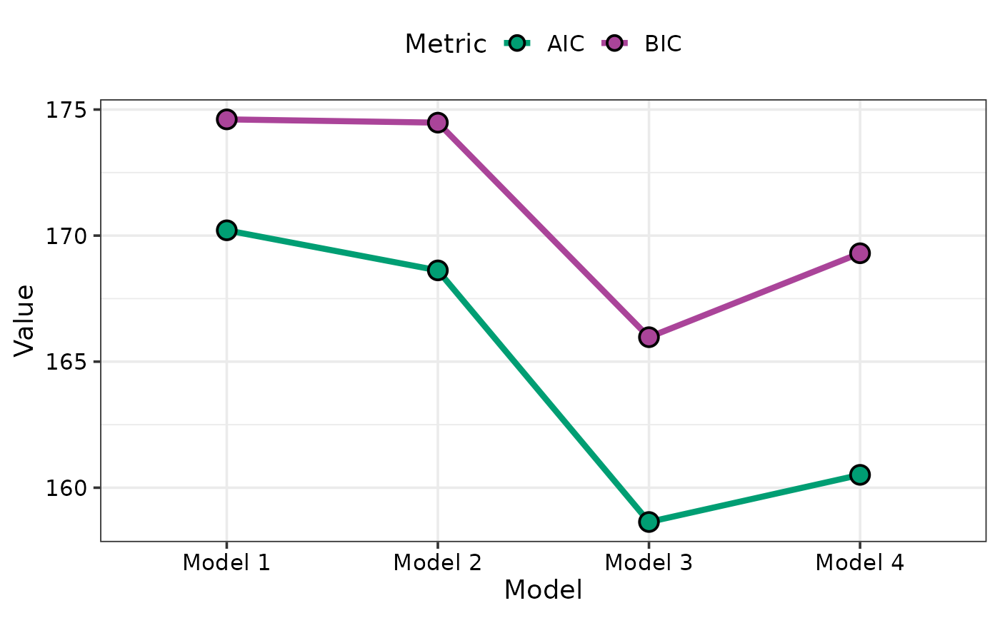

Visualise model selection
model_selection_plot.RdThis function accepts the output of the model_selection_data
function and helps visualise model selection by showing a visual comparison
between the information criteria for different models. It is also possible
to visualise a breakup of the information criteria into deviance
(goodness-of-fit) and penalty terms for each model. This could aid in
understanding why a parsimonious model could be preferable over a more
complex model.
Arguments
- data
A data-frame consisting of the information criteria for different regression models. This data could be prepared using the `model_selection_data` function, or be created manually by the user with the necessary information stored into the respective columns.
Examples
## Fit different candidate models
mod1 <- lm(mpg ~ disp, data = mtcars)
mod2 <- lm(mpg ~ disp + hp, data = mtcars)
mod3 <- lm(mpg ~ disp + hp + wt, data = mtcars)
mod4 <- lm(mpg ~ disp + hp + wt + carb, data = mtcars)
## Group models into list
models_list <- list("Model 1" = mod1, "Model 2" = mod2,
"Model 3" = mod3, "Model 4" = mod4)
## Prepare data for visualisation
## Specific metric
plot_data1 <- model_selection_data(models = models_list,
metric = c("AIC"))
## Visualise
model_selection_plot(plot_data1)
## Multiple metrics can be plotted together as well
plot_data2 <- model_selection_data(models = models_list,
metric = c("AIC", "BIC"))
## Visualise
model_selection_plot(plot_data2)

## If single metric is specified then breakup of metric
## between goodness of fit and penalty can also be visualised
plot_data3 <- model_selection_data(models = models_list,
metric = c("AICc"),
breakup = TRUE)
## Visualise
model_selection_plot(plot_data3)